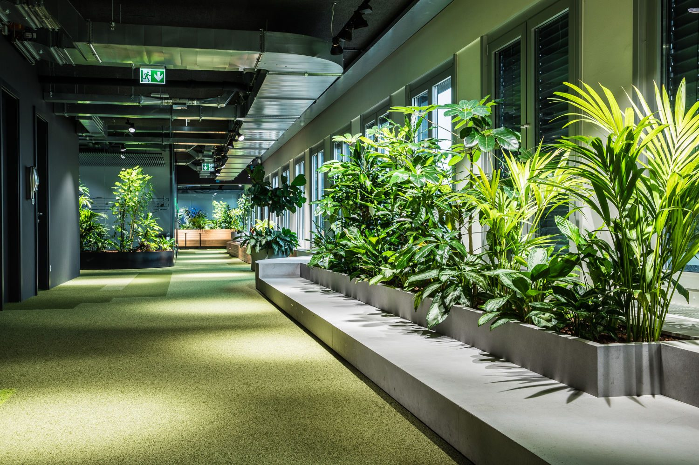
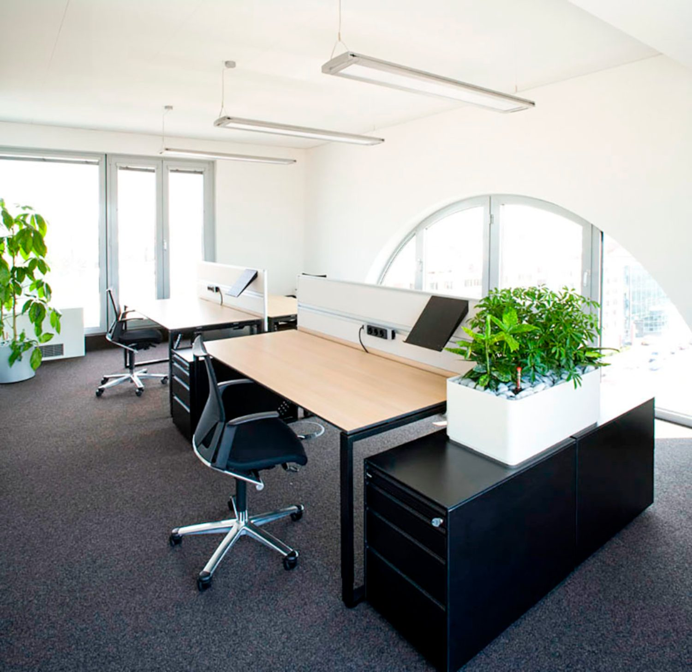

Für eine florierende Entwicklung.
Begrünungskonzepte für jeden Raum, Vertikalbegrünung, Moosbilder mit integriertem Logo, Gefäße für Erd- und Hydrokultur – inklusive regelmäßiger Pflege mit Pflanzenentwicklungsgarantie.
Seit 1999 planen, errichten und pflegen wir Begrünungen für Gewerbe, Bauträger und Privatkund:innen. Rund 40 Beschäftigte, drei Standorte, ein Anspruch: Pflanzen, die ab dem ersten Tag funktionieren.

des Niederschlagswassers kann ein Flachdach mit Extensivbegrünung (10–15 cm Aufbau) speichern.
weniger Wärmeeintrag bewirkt extensive Dachbegrünung (10–15 cm Aufbau) im Vergleich zu einem Kiesdach.
der eintreffenden Sonnenstrahlung wandeln begrünte Dächer in Verdunstungskälte um. Konventionelle Dächer erzeugen 95 % Wärme.
Um so viel kann ein einzelner großer Straßenbaum seine Umgebung durch Schatten und Verdunstung abkühlen.
Innenraum, Dach und Garten laufen bei uns nicht nebeneinander, sondern greifen ineinander – bis hin zum Indoor-/Outdoor-Konzept aus einer Hand.
Begrünungskonzepte für jeden Raum, Vertikalbegrünung, Moosbilder mit integriertem Logo, Gefäße für Erd- und Hydrokultur – inklusive regelmäßiger Pflege mit Pflanzenentwicklungsgarantie.
Extensiv, intensiv oder Urban Farming: sieben Systemaufbauten vom Spardach bis zum Schrägdach mit Schubsicherung, dazu Fassadenbegrünung und Dachgartenpflege.
Privatgärten und öffentliche Grünanlagen, Bepflanzungspläne, Mauern und naturnahe Wege, Holzarbeiten und automatische Bewässerungsanlagen.

Das Spardach-System ist unser beliebter Standardaufbau für Extensivbegrünungen und hat sich seit Jahrzehnten in der Praxis bewährt. Die Entwässerung erfolgt über eine Festkörperdränage, die auch sehr gut für gefällelose Dächer geeignet ist.
Extensivbegrünung · Langzeitwasserspeicher · auf den meisten Standarddächern einsetzbar
Wir sehen uns Dach, Raum oder Grundstück an und klären Statik, Licht, Nutzung und Budget.
Individuell abgestimmte Bepflanzungspläne bzw. Systemaufbau, mit einem guten Preis-Leistungsverhältnis.
Unsere jahrzehntelange Erfahrung und unser großes Team ermöglichen die pünktliche und verlässliche Umsetzung auch umfangreicher Projekte.
Auf Wunsch übernehmen wir die laufende Pflege Ihrer Garten- und Grünflächen, die Dachgartenbetreuung und die Innenraumpflege.
Die Übernahme der regelmäßigen Pflege im Innenraum erfolgt mit Pflanzenentwicklungsgarantie.
Indoor-/Outdoor-Konzepte, Solarkonzepte am Gründach, Bewässerung – wir bauen an, wenn das Projekt wächst.
Schicken Sie uns Eckdaten und Fotos – wir melden uns mit einer ersten Einschätzung aus dem zuständigen Standort.